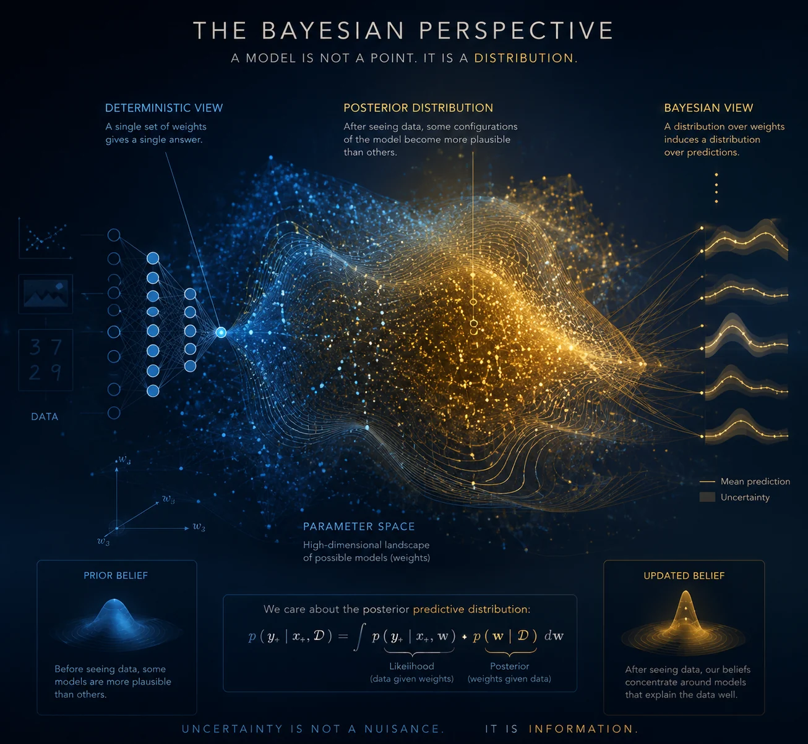
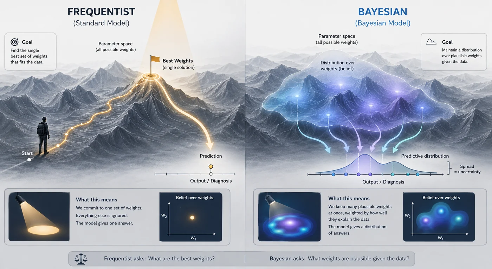
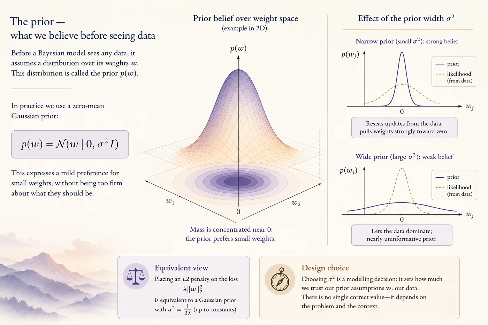
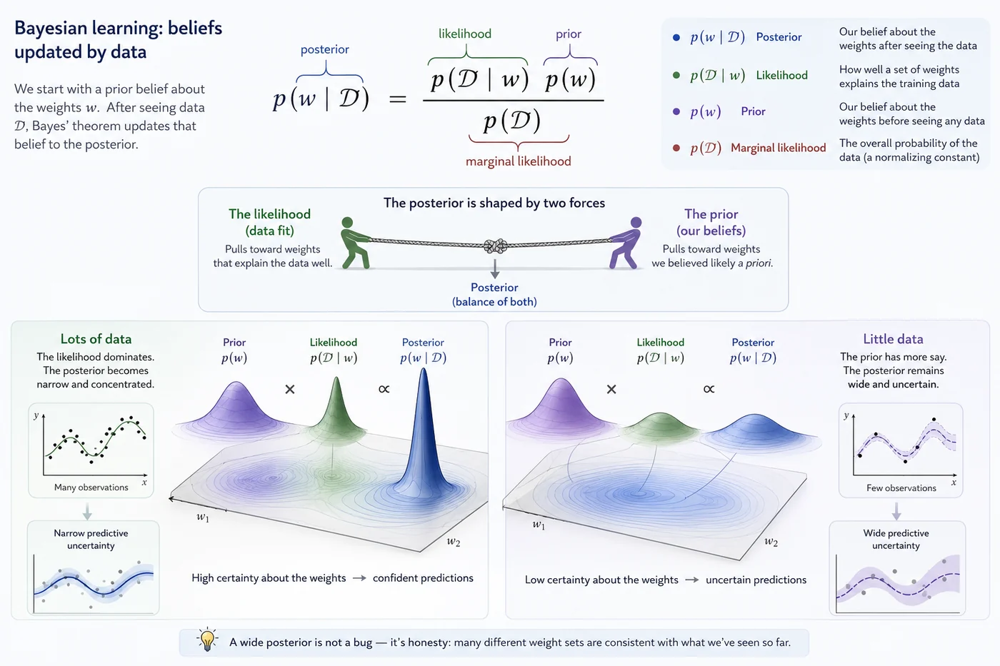
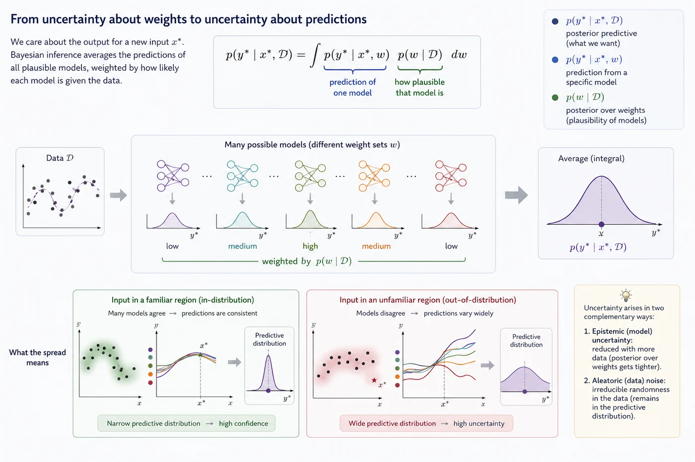
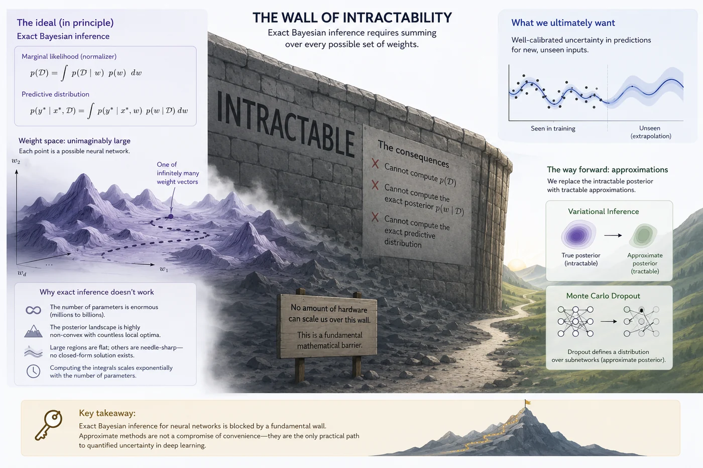

Session 4 — The Bayesian Perspective¶
Part 2 — Core UQ Algorithms
A different way of thinking about what a model knows — and what it doesn't.

What you'll learn in this session¶
- Why treating model weights as a distribution (rather than a fixed point) is the key to principled uncertainty
- What the prior, likelihood, and posterior mean in the context of a neural network
- What the posterior predictive distribution is, and why it's the object we actually care about
- Why exact Bayesian inference is intractable — and what that means for everything that follows
🤔 1. Two ways to think about a model's weights¶
Here's a question that might not have an obvious answer: what are the weights of a neural network, really? You could say they're just numbers in memory. But how we think about those numbers turns out to matter a lot — it decides whether a model can express uncertainty or not.
The standard approach — what statisticians call the frequentist view — treats the weights as fixed but unknown numbers. Training is a search: we look through the parameter space and land on a single set of weights $\hat{w}$ that fits the data well. Once training is done, that's it. The model is committed. It has one answer for every input.
The Bayesian view starts from a very different place. Instead of treating the weights as a fixed target, it treats them as random variables — things that have a probability distribution. We start with a belief about what the weights might look like. We see data. We update that belief. The result is never a single point — it's always a distribution, showing how sure or unsure we are about which weights are right.
The practical effect is simple but powerful. A standard model gives you one prediction per input. A Bayesian model gives you a distribution over predictions — and the spread of that distribution is the model's uncertainty. That's exactly what we've been trying to get at since Part 1.
| Standard model | Bayesian model | |
|---|---|---|
| Weights | Fixed after training | Follow a probability distribution |
| Prediction | One answer per input | Distribution over answers |
| Uncertainty | Has to be added externally | Built into the model itself |
| What it asks | What are the best weights? | What weights are plausible given the data? |

🌅 2. The prior — what we believe before seeing data¶
Before a Bayesian model sees a single training example, it already has beliefs about its weights. This starting distribution is called the prior, written as $p(w)$. Think of it as the model's default view of the world before any evidence comes in.
In practice, the prior is usually a simple Gaussian centered at zero:
$$p(w) = \mathcal{N}(w \mid 0, \sigma^2 I)$$
This means we mildly prefer small weights, without being too firm about what they should be. You might know this in disguise already: adding an L2 penalty to your loss function is the same thing, mathematically, as putting a zero-mean Gaussian prior over the weights. The prior was always there — we just didn't call it that.
The width of the prior matters:
- A narrow prior (small $\sigma^2$) is a strong belief — it resists updates from the data and pulls weights firmly toward zero
- A wide prior (large $\sigma^2$) is nearly uninformative — it steps aside and lets the data speak
Getting this balance right is a real design choice in Bayesian modelling. There's no single correct answer — it depends on how much you trust your data versus your prior assumptions.

The prior acts as a starting map for inference: narrow priors constrain exploration through strong assumptions, while wider priors leave more room for the data to determine where belief should ultimately concentrate.
🔄 3. The posterior — beliefs updated by data¶
Once we've seen training data $\mathcal{D} = \{(x_1, y_1), ..., (x_n, y_n)\}$, we update our prior using Bayes' theorem to get the posterior — our new, data-informed belief about the weights:
$$\underbrace{p(w \mid \mathcal{D})}_{\text{posterior}} = \frac{\overbrace{p(\mathcal{D} \mid w)}^{\text{likelihood}} \cdot \overbrace{p(w)}^{\text{prior}}}{\underbrace{p(\mathcal{D})}_{\text{marginal likelihood}}}$$
Each term has a clear meaning:
| Term | Name | What it means |
|---|---|---|
| $p(w \mid \mathcal{D})$ | Posterior | Our belief about the weights after seeing the data |
| $p(\mathcal{D} \mid w)$ | Likelihood | How well a set of weights explains the training data |
| $p(w)$ | Prior | Our belief about the weights before seeing any data |
| $p(\mathcal{D})$ | Marginal likelihood | The overall probability of the data — more on this shortly |
The story this formula tells is simple. The posterior is shaped by two forces pulling against each other: the likelihood (what the data says) and the prior (what we believed before). With a lot of data, the likelihood wins and the posterior tightens around the weights that best explain the observations. With little data, the prior has more say, and the posterior stays wide — which is the right thing to do, since we genuinely don't know enough yet.
That width is not a bug. A wide posterior means the model is honestly saying: many different weight sets are consistent with what I've seen so far. That maps directly onto uncertain predictions — which is exactly what we want.

Bayesian learning treats model parameters as uncertain quantities rather than fixed values. The resulting distribution over weights reflects both prior assumptions and empirical evidence, allowing uncertainty in parameter estimates to propagate naturally into predictions.
🎯 4. The predictive distribution — what we actually care about¶
The posterior over weights is a means to an end. What we really want is uncertainty over predictions. For a new test input $x^*$, the Bayesian answer is the posterior predictive distribution:
$$p(y^* \mid x^*, \mathcal{D}) = \int p(y^* \mid x^*, w) \cdot p(w \mid \mathcal{D}) \, dw$$
| Term | What it means |
|---|---|
| $p(y^* \mid x^*, \mathcal{D})$ | Distribution over outputs for a new input, given all training data |
| $p(y^* \mid x^*, w)$ | What a specific weight set $w$ predicts for this input |
| $p(w \mid \mathcal{D})$ | How likely that weight set is, given the data |
In plain terms: instead of asking what one trained model predicts, we ask what you'd get if you averaged the predictions of every possible model, weighted by how likely each one is. That integral is a weighted average over a whole space of neural networks.
The spread of this distribution is the model's uncertainty on that input:
- When most weight sets agree — because the input is familiar — the output distribution is tight
- When they disagree — because the input is unusual or outside the training data — the output distribution is wide
That width is a real signal, not noise.

Bayesian prediction reflects consensus across many plausible models. Confidence arises where these models make similar forecasts, while disagreement reveals regions where the available evidence is insufficient to support a single explanation.
🧱 5. The wall — why exact inference doesn't work¶
At this point you might wonder: why isn't everyone using Bayesian neural networks already? The framework is clean, the goal is clear, and the predictive distribution is exactly what we want. The answer is in that denominator — $p(\mathcal{D})$ — and in the integral inside the predictive distribution.
Both require summing over every possible set of weights:
$$p(\mathcal{D}) = \int p(\mathcal{D} \mid w) \cdot p(w) \, dw$$
For a network with even a few hundred thousand parameters, that's a space too big to search. The landscape is messy — full of local peaks and flat regions — with no nice closed-form solution. Faster GPUs won't fix this. It's a basic mathematical fact.
But this wall doesn't close the door — it opens one. If the exact posterior is out of reach, maybe a good-enough approximation is within reach. The two methods we cover next — Variational Inference and Monte Carlo Dropout — are two very different answers to that question. Both are imperfect. Both are genuinely useful. And understanding the ideal they're approximating — which is what this session has been about — is what lets you think clearly about what each one gets right and what it gives up.

Exact Bayesian inference provides the ideal framework for uncertainty quantification, but the sheer scale of neural network weight spaces makes the required computations intractable. This fundamental barrier motivates approximation methods such as Variational Inference and Monte Carlo Dropout, which make Bayesian uncertainty estimation practical.
📚 6. Recommended reading¶
These are widely cited landmarks in Bayesian statistics and Bayesian machine learning. The goal is not to read all of them now, but to know the intellectual map behind this session: priors, likelihoods, posteriors, computation, and Bayesian prediction. 🗺️
Bayesian Data Analysis
Gelman et al., first edition 1995; later editions widely used
The standard reference for applied Bayesian statistics. It is the best broad source for understanding priors, likelihoods, posteriors, posterior predictive checks, hierarchical modelling, and Bayesian workflow.
A Practical Bayesian Framework for Backpropagation Networks
MacKay, 1992 — Neural Computation
A foundational Bayesian neural-network paper. It explains why neural-network weights should be treated probabilistically and why uncertainty over weights matters for prediction.
Bayesian Learning for Neural Networks
Neal, 1996 — Springer Lecture Notes in Statistics
A landmark book-length treatment of Bayesian neural networks. It connects neural networks, priors over functions, MCMC, and uncertainty in a way that still shapes modern Bayesian deep learning.
Gaussian Processes for Machine Learning
Rasmussen & Williams, 2006 — MIT Press
A foundational Bayesian machine-learning text. Gaussian processes are one of the cleanest examples of Bayesian prediction: instead of learning one function, the model maintains a posterior distribution over possible functions.
✅ Session summary¶
| Concept | Key takeaway |
|---|---|
| 🔁 The core shift | From a single weight estimate $\hat{w}$ to a full distribution $p(w \mid \mathcal{D})$. Uncertainty lives in the spread. |
| 📐 The three terms | Prior × Likelihood → Posterior. The normalizer $p(\mathcal{D})$ is the problem. |
| 🎯 What we actually want | The posterior predictive — a distribution over outputs whose spread is the model's real uncertainty. |
| 🧱 The wall | Exact inference requires integrating over all weight configurations — impossible at scale. |
➡️ Next: Session 5: Variational Inference
Session 5 takes this head-on with Variational Inference — swapping the true posterior for a simpler distribution and minimizing the gap between them.